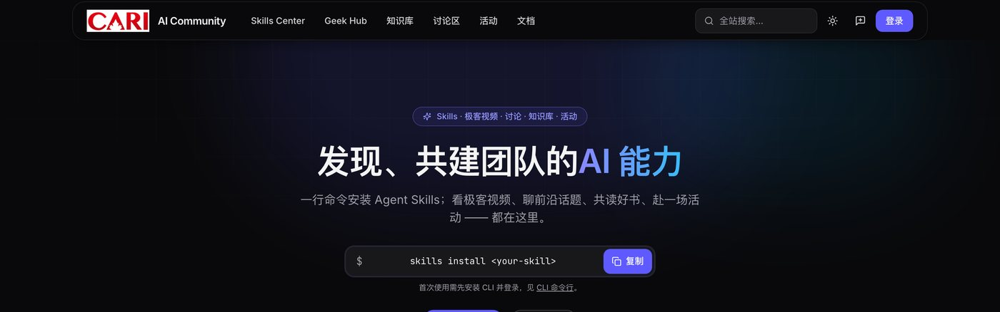
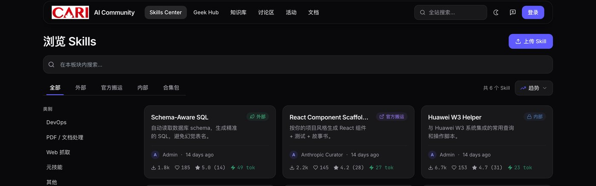
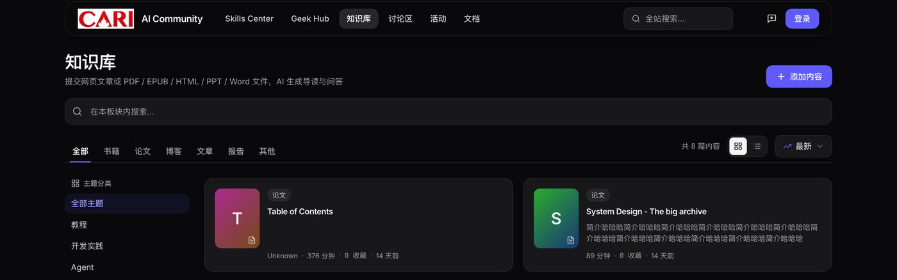
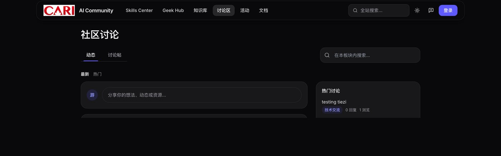

现状
诊断
规划
效果
CARI · AI Community
AI 社区：已经建成什么，下一步怎么让它转起来
六大空间已在内网上线 · 社区贡献激励体系设计 · 三期规划、预期效果与需要的支持
1现状与诊断
平台已经建成的六个空间和三个别家没有的底牌；以及为什么内容进得来、飞轮却没转起来的五个缺口。
约 15 分钟 · 第 1 – 8 页
2下一步规划
三条主线共 14 项。重点是贡献激励体系：等级、成就、称号、精华作者、达标奖励，以及怎么防刷、怎么兑现。
约 17 分钟 · 第 9 – 15 页
3效果与诉求
度量口径先定再上功能；三期能到什么水平；需要拍板的是奖励预算、算力排期、运营人力和试点部门。
约 5 分钟 · 第 16 – 18 页
今天想拿到的三个结论 其余都可以会后再定
- 激励体系按第 10 – 12 页的方案做 —— 第一批先上计分内核、等级、成就、精华作者与权益档奖励；领域称号、荣誉档与实物档随第三批兑现。
- 第三档实物奖励给一笔小额季度预算 —— 前两档零成本，这一档决定"达标有奖励"是不是空话。
- embedding 模型的算力排期本周开始排 —— 它的等待时间决定第二批什么时候能开工。
汇报稿 · 2026-08 · 内部使用
现状
诊断
规划
效果
CARI · AI Community
汇报提纲：五章，一句话结论各一条
每章的结论先写在这里，细节在后面的页上
| 章 | 内容 | 核心结论 | 页 |
|---|---|---|---|
| 一 | 已建成的能力 | 六大空间全部上线，内容消费面已经完整；内网大模型免费调用、W3 实名的组织数据、agent 生态出口是外部社区拿不到的三张底牌。 | 3 – 6 |
| 二 | 诊断 | 问题不是缺功能，是缺闭环：提问没有终态、需求侧没有信号、贡献没有回报出口、AI 只是阅读工具、内容发了就沉。 | 7 |
| 三 | 外部借鉴 | 八个方向、96 条机制的调研收敛：采纳终态、限量致谢、AI 首答带引用、悬赏联署照抄；日签到、抽奖、全站总分排行榜一律不做。 | 8 |
| 四 | 规划 | 三条主线 14 项，互相供料成一个飞轮。本次重点是主线 B 贡献激励体系：等级 / 成就 / 称号 / 精华作者 / 达标奖励。 | 9 – 15 |
| 五 | 效果与诉求 | 北极星指标是月活贡献者数，不是访问量。需要拍板：一笔季度奖励预算、一个 embedding 模型的算力排期、约 0.3–0.5 人力的运营 owner、一到两个试点部门。 | 16 – 17 |
AI Community · 汇报提纲
现状
诊断
规划
效果
CARI · AI Community
【现状】三件事一直在被重复做，所以有了这个社区
起点不是"做一个门户"，是三个每周都在发生的具体浪费
过去是这样 三个真实场景
同一段提示词写三遍。多数人手里都有两三个跑得不错的 skill 或 prompt，躺在自己的笔记本上。隔壁组要用，只能从头再调一次。
一份六十页的报告，四个人各读一遍，就是四个下午。好文章、好论文在群里刷过去就没了，谁也没法搜。
请到的专家讲座只发一个邮件列表。隔壁实验室根本不知道，有时候同一个实验室的人也不知道。讲座开完，本该来的人一半没被告知。
社区的定位 一句话
一个内网实名的 AI 知识与协作社区：把个人的一次性产出，变成组织可复用、可搜索、可被 agent 消费的资产。
- 能装进工具的东西 —— Skill 上传一次，别人一行命令装走，还能改完再发布。
- 能被搜到的东西 —— 文章、论文、PDF / EPUB / PPT / Word 进知识库，AI 逐章导读、问答带原文引用；视频、讨论、活动进同一套全站搜索，半年后还翻得出来。
- 能被找到的人和事 —— 活动全员可见、按主题筛、自动换算时区；谁在做什么写在主页上。
三条都已经上线，不是规划。下一页是完整清单。
AI Community · 定位
现状
诊断
规划
效果
CARI · AI Community
【现状】六个空间已经上线，内容消费面是完整的
下表为已经在内网跑起来的能力，不含规划项 · 截至 ____：注册 __ 人 · Skill __ 个 · 知识库 __ 篇 · 本周活跃 __ 人（数据取自管理后台，汇报前填）
| 空间 | 解决什么问题 | 已有能力 | 状态 |
|---|---|---|---|
| 技能市场 | Skill / 提示词重复造 | 上传、浏览、评分与评论；版本历史与更新订阅；Remix 二次创作并署名原作者；公开 / 受限 / 私有三级权限与逐个审批；skills install 一行命令装进 Coding Agent；Playground 不装先试；带与不带该 Skill 的同题对比 | 已上线 |
| 合集包 | 按场景一次装齐 | 策展式 Skill 套装，skills install pack:<名称> 整包安装；成员资格自动校验（未发布 / 私有的不进包） | 已上线 |
| 知识库 | 好资料散落、同一份材料多人重复读 | 贴链接或传 PDF / EPUB 即入库；AI 逐章摘要与导读；原版 PDF 与精读两种视图；划线、批注、共享笔记；带原文引用的检索问答；书架进度；选中即译（中英互译） | 已上线 |
| 极客视频 | 技术分享看完就沉 | 长视频板块 + 竖屏随刷短视频；评论与稍后看；封面与预览片；AI 文案润色；管理员精选进首页 | 已上线 |
| 讨论区 | 群聊里刷过去就找不回 | 动态 feed + 论坛话题两种形态；多主题分类与置顶；图片 / 视频 / 文档附件；投票；表情包；两级评论与回复通知 | 已上线 |
| 社区活动 | 讲座只到一个邮件列表 | 全员可见的活动日历；按类型、主题、城市、线上线下筛；按浏览者所在时区自动换算；报名与开场前提醒；一键加入日历；讲师名片与相关活动 | 已上线 |
支撑能力：站内通知 + 邮件（可按类型自己开关）· 公告 · 意见反馈板 · 个人主页与私人工作台 · 隐私开关（分板块控制谁能看）· 员工名单同步（部门 / 研究所自动落到账号）· W3 单点登录 · 全站搜索 · 中 / 英 / 法 三语 · 管理后台与操作留痕
AI Community · 能力清单
现状
诊断
规划
效果
CARI · AI Community
【现状】产品长什么样：四个主要入口
以下为真实界面截图（演示数据），中英法三语可切换

首页 —— 未登录时开门见山给一行安装命令（如图）；登录后换成今日新增、热门讨论、即将举行的活动与新上架文档。

技能市场 —— 按分类、评分、来源筛选；每个 Skill 有版本、评论、安装量与权限标识。

知识库 —— 贴链接或传 PDF 即入库，AI 逐章导读，读的时候可以直接问，答案带原文引用。

讨论区 —— 动态 feed 与按主题归档的论坛帖是两个标签页，右栏常驻热门讨论；发过的内容半年后还搜得到。
AI Community · 界面
现状
诊断
规划
效果
CARI · AI Community
【现状】三张底牌：外部社区花钱也拿不到的东西
差异化只能建在这三件上，规划里的每一项都踩在其中至少一件上
1内网大模型，免费调用
社区里的 AI 能力直接调内网模型，边际成本接近零。带原文引用的检索问答已经在知识库跑通 —— 模型通道、分片、引用格式和流式前端都能直接复用；要扩到全站问答，还需要补一层全站索引，就是主线 C 的语义地基。
结果是：再加一个 AI 能力不用重新谈预算，也不用担心内容出内网。后面规划里 AI 出现在四个地方 —— 首答、速递编辑、发帖查重、缺口聚类，都跑在这一条链路上。
结果是：再加一个 AI 能力不用重新谈预算，也不用担心内容出内网。后面规划里 AI 出现在四个地方 —— 首答、速递编辑、发帖查重、缺口聚类，都跑在这一条链路上。
模型就在内网：AI 用多少都不额外花钱，内容一步不出网（外部方案要么买 kapa.ai 这类按量订阅，要么接外部 API）
2W3 实名 + 员工目录
部门、研究所信息按工号严格匹配落到账号上。"这个 Skill 被 12 个研究所在用""谁是这个方向最懂的人"这类判断有可核实的依据，冒领不了。
员工名单同步已经在跑，登录时部门和研究所自动落到账号上。所以"专家地图"和"跨部门覆盖度"这两件事今天就有数据基础，不用额外让人填表。
员工名单同步已经在跑，登录时部门和研究所自动落到账号上。所以"专家地图"和"跨部门覆盖度"这两件事今天就有数据基础，不用额外让人填表。
外部平台的身份体系天然做不了这件事
3Agent 生态 + 现成命令行鉴权
Skill 与合集包已经能被同事的 Coding Agent 一行命令装走，令牌体系也在跑。把问答和文档也变成 agent 可消费的出口，是第三批的 MCP 知识出口。
到那一步，作者就能看到自己的回答"被同事的 Coding Agent 引用了多少次"—— 现有令牌体系就能算出这个数，对工程师最有说服力。
到那一步，作者就能看到自己的回答"被同事的 Coding Agent 引用了多少次"—— 现有令牌体系就能算出这个数，对工程师最有说服力。
别家做这件事要从零建一套账号体系
为什么这一页重要：社区类产品最容易做成"又一个内网论坛"。避免这个结局的唯一办法，是把功能建在别人复制不了的资产上 —— 免费的模型、可核实的组织身份、能被 agent 直接消费的知识。后面 14 项规划，每一项都对应到这三条中的至少一条。
AI Community · 差异化
现状
诊断
规划
效果
CARI · AI Community
【诊断】内容进得来，但飞轮还没转起来 —— 五个缺口
依据是这段时间的后台观察和自己用下来的判断，不是问卷结论 —— 第一批上线前补一轮 8–10 人访谈
| # | 缺口 | 现在的表现 | 后果 |
|---|---|---|---|
| 1 | 提问没有终态 | 讨论区能发帖能回帖，但没有"这条已经解决了"的标记，也筛不出未解决的问题。 | 半年后同样的问题再问一遍。好答案沉在第 17 楼，搜索也认不出它是对的。 |
| 2 | 需求侧没有信号 | 技能市场只有"我发布了什么"，没有任何"大家想要什么"的入口。 | 愿意贡献的人不知道做什么最有用，只能凭感觉发；真实需求留在群聊里。 |
| 3 | 贡献没有回报出口 | 点赞、下载量都是流水数字，年底写述职时拿不出来，也没有任何形式的认可。 | 帮了人的人得不到回报。这是社区类产品最常见的死法 —— 头三个月靠热情，之后没人再发。 |
| 4 | AI 只是阅读工具 | AI 只在知识库里读文档、做摘要，不参与社区运转。 | 新帖零回复的死寂没人管；AI 答不上来的问题也没被记下来，等于每天在浪费一份需求清单。 |
| 5 | 内容没有分发回流 | 发了就沉，只有当天在线的人看得见，没有任何定期送达。 | 大多数人不知道社区这周发生了什么。没有分发，后面做的悬赏榜、缺口榜、挑战赛都不会有人看见。 |
坦白一条：前一阶段的精力都花在把六个空间做全（连短视频、表情包、投票都做了），机制层一直没动 —— 今天缺的正是这一层。所以这批规划不再加新板块。
AI Community · 诊断
现状
诊断
规划
效果
CARI · AI Community
【调研】八个方向、96 条机制：抄机制，不抄形式
2026-08 的一轮外部调研：公开可查的机制照抄并标出处，我方自己设计的部分单独标注
| 方向 | 看了谁 | 最值得拿来用的机制 |
|---|---|---|
| 开发者问答 | Stack Overflow · Discourse · V2EX · 掘金 | 采纳终态与"未解决"筛选；发布前辅导；有成本的致谢（V2EX 感谢要消耗铜币并转给作者） |
| AI / ML 社区 | Hugging Face · Kaggle · 魔搭 · alphaXiv | 论文日报的提交—投票—作者认领；网页直接提改动、作者一键合并；分轨奖牌 |
| 内容社交 | Reddit · 知乎 · 即刻 · Product Hunt | "等你来答"式定向路由；编辑精选 + 按小时均匀计票防霸榜（PH 另做过一天随机轮播实验）；按阈值解锁权限 |
| 游戏化机制 | Duolingo · GitHub · Strava · Steam | 每日声望封顶（Stack Overflow）· XP 边际递减与异常增长踢榜（Duolingo）；滚动头衔（Strava KOM 被刷新即易主）；成就柜（GitHub / Steam） |
| 阅读社交 | 微信读书 · Readwise · Goodreads | 热门划线聚合；进度检查点；"大家在问"；历史划线的每日回顾 |
| 竞赛悬赏 | LMArena · Kaggle · Algora · Devpost | 双盲对战 + 分任务榜；悬赏内嵌交付流程；获奖强制写复盘 |
| 企业内部社区 | Stack Internal · Viva Engage · Google · 腾讯 KM | AI 草拟 → 专家核验与专家按证据自动授予（Stack Internal）；提问定向路由（Viva Engage）；限量同事致谢（Google peer bonus）；晋升与分享挂钩（腾讯 KM） |
| AI 原生能力 | Discourse AI · kapa.ai · Reddit Answers | 相似主题实时提示（Discourse 核心）+ 语义相关与 AI 搜索（Discourse AI）；提问前 AI 先答一轮（kapa.ai）；答不上来的问题聚成缺口清单 |
要抄的：采纳终态 · 限量致谢 · AI 首答带引用 · 悬赏联署 · 声望封顶与边际递减 · 滚动头衔 · 获奖写复盘
我方自己设计的：跨部门多样性系数 · 新作者保底轮播位
我方自己设计的：跨部门多样性系数 · 新作者保底轮播位
明确不做：每日签到 · 抽奖 / 开箱 · 虚拟币商城 · 全站总分排行榜 · 幼稚化徽章 · 等级降级（实名同事环境里降级是政治问题）
AI Community · 外部调研（2026-08）
现状
诊断
规划
效果
CARI · AI Community
【规划】不做孤立功能点：14 项排成一个互相供料的飞轮
每一项的产出，都是下一项的输入
1问答沉下知识
采纳一条答案，这个问题就有了终态
▶
2AI 的失败暴露缺口
AI 答不上来的问题，就是最真实的需求清单
▶
3缺口变成悬赏
缺什么就悬赏什么，同事联署加权
▶
4悬赏找到对的人
按证据化的专家画像定向推送
▶
5贡献变成职业资本
等级、称号、精华、奖励、述职证据
▶
6速递送回给所有人
把沉默的大多数带回第 1 步
主线 A｜让知识有终态 5 项
- 问答采纳终态 —— 绿勾 + 未解决筛选 工作量 小
- AI 值班员 —— 24 小时内必有第一条带引用的回应 中
- 知识缺口雷达 —— AI 答不上的问题聚成榜 中
- MCP 知识出口 —— 已验证的知识给 agent 消费 中
- 悬赏榜（揭榜挂帅） —— 补上"大家想要什么"的信号 中
主线 B｜让贡献有回报 5 项 · 本次重点
- 成长等级 + 成就 + 称号 —— 短期反馈与专业信誉 小 → 中
- 精华作者与精选内容 —— 曝光位 + 新人保底轮播 小
- 达标奖励 —— 权益 / 荣誉 / 实物三档 小 · 需预算
- 三枚致谢 —— 每月只有三枚，必须写清事由 小
- 专家系统 + 述职证据包 —— 贡献可核查、可导出 中
主线 C｜让内容找到人 4 项
- 一页速递（周刊） —— 每周一一页纸，缺席者收个人版 小
- 全站语义地基 —— 查重、相关推荐、语义搜索 大 · 需算力
- 双周挑战赛 —— 两周一题，获奖必须写复盘 中
- 内网模型对战场 —— 这活儿到底该用哪个模型 大
AI Community · 规划总览
现状
诊断
规划
效果
CARI · AI Community
【规划 · 重点】贡献激励体系：等级、成就、称号、精华、奖励
五层各管一件事：短期反馈、里程碑、专业信誉、曝光、临门一脚
成长等级短期反馈 · 只升不降
L1 访客 → L2 参与者 → L3 贡献者 → L4 核心贡献者 → L5 社区专家。经验只来自被人用到的贡献（被安装、被采纳、被引用、被致谢），发帖数本身不加分。每级解锁的是增量权益：在基础额度之上加发 AI 调用与下载额度、发起悬赏、创建合集、新功能内测。读、搜索、下载的基础额度对所有人一视同仁，不贡献也不会被卡。
成就做成了什么才有
一次性里程碑，挂在个人主页的成就柜：首次发布 Skill · 被 10 个部门装过 · 回答被采纳 10 次 · 办成一场活动 · 读完一本书并留下 5 条批注 · 连续 4 周有贡献。不设"连续登录""每日签到"这类只跟出勤有关的成就。
称号领域信誉 · 会过期
领域称号由证据自动授予，例如「vLLM 部署 · 已验证」，依据是被采纳的回答、Skill 的跨部门安装、讲过的活动，每条都能点开核实；滚动 90 天，证据不再满足就自动摘掉（静默摘牌：不通知、不公示、不进任何记录，只是不再显示）。荣誉称号由评选授予（季度社区之星、悬赏达人），永久保留。
精华与精选曝光位
管理员 + AI 举荐，精华帖 / 精选 Skill / 优质文档挂标，作者获得「精华作者」标识与首页曝光位。新作者有保底随机轮播位 —— 内部小社区最容易变成永远同几个人霸榜，这一条专门防它。
达标奖励兑现
达到条件就有实际回报，分三档：权益（即时、零成本）荣誉（季度评选）实物（季度 / 年度，需预算）规则见下一页。
AI Community · 激励体系（1/3）
现状
诊断
规划
效果
CARI · AI Community
【规划 · 重点】怎么算分、怎么防刷、奖励怎么兑现
激励体系只有两种失败方式：刷分泛滥，或者规则不透明没人信
计分内核 四条防刷规则，全站共用一套
- 每类行为按日封顶 —— 一天灌 50 条评论和灌 5 条，加分一样。
- 同类重复边际递减 —— 第 N 次按 1/√N 折算，多样性比数量值钱。
- 多样性系数 —— 跨板块、跨部门受益的贡献加权，互吹小圈子拿不到系数。
- 只认被消费的贡献 —— 被安装、被采纳、被引用、被致谢才算，纯发布量不计。
四条红线 和功能同一天上线
- 规则全公开。每一条计分、授予、晋升的条件都有说明页，本人可自查明细，不做黑箱分数。
- 只做增益，不做降级。实名同事环境里降级是政治问题，不是产品问题。
- 贡献证明不等于绩效。它是本人自愿导出的一份材料，是否采信由主管和 HR 决定；平台不主动把数据推给任何人的主管。
- 不做人与人的总分对比。没有全站总分排行榜；榜单只按单项事实排（如本季精华作品数），不出部门间的排名，也不提供按人排序的导出；隐私开关与展示功能同时发布，不想露的可以关。
奖励三档 前两档零成本，第三档要预算
| 档位 | 内容 | 谁来批 |
|---|---|---|
| 权益 即时 · 零成本 | 在基础额度之上加发 AI 调用与下载额度（基础额度不动，不给任何人设新上限）；解锁发起悬赏、创建合集（今天仅管理员可建）；个人主页装扮；活动优先报名；新功能内测资格 | 平台按规则自动发放 |
| 荣誉 季度 · 零成本 | 季度社区之星、精华作者榜、部门内的贡献汇总（不做部门间排名）；一份可点开核查的贡献证明，本人自愿导出，用不用由自己决定 | 运营 + 管理员评审 |
| 实物 季度 / 年度 | 积分兑换：技术书籍、内部周边、外部会议名额；年度评优的奖金或奖品 | 需一笔小额预算，本次汇报请示 |
第三档为什么不能省：前两档解决"被看见"，第三档解决"值得花这个时间"。研发同事的时间是最贵的资源，一年几万元量级的兑换池，换的是几十个可复用的 Skill 和上百条沉淀下来的答案。
AI Community · 激励体系（2/3）
现状
诊断
规划
效果
CARI · AI Community
【规划 · 重点】激励挂在已有的板块上，不新建孤岛
不做新的空间：等级、成就、称号只是给已有行为加一层记账和兑现 · 分批上线见第 15 页
| 已有空间 | 用户本来就在做的事 | 挂上去的激励 | 一个具体例子 |
|---|---|---|---|
| 技能市场 含合集包 | 上传、安装、评分、Remix、订阅更新 | 等级经验（按跨部门安装量算，不按上传数）· 成就「被 10 个部门装过」· 精选 Skill 挂标 · 悬赏达成标记 部门以员工名单按工号同步的字段为准，未匹配到的记「部门未知」 | 你的 Skill 被第 10 个研究所装上 → 解锁成就，同时进首页精选位 |
| 知识库 | 提交文档、AI 导读、划线批注、共享笔记 | 等级经验（被加书架、被检索引用）· 成就「读完一本并留 5 条批注」· 精华文档挂标 | 你提交的论文被 20 个人加进书架 → 计入贡献，并进本周速递 |
| 讨论区 | 发帖、回帖、投票、附件分享 | 采纳绿勾 · 领域称号（按被采纳数与部门广度）· 精华帖 · 三枚致谢 | 你的回答被采纳 10 次 → 自动拿到「RAG 检索 · 已验证」称号，90 天滚动 |
| 极客视频 | 上传短视频、看长视频、评论、稍后看 长视频目前由管理员统一收录 | 成就「第一次分享」（短视频即可解锁）· 管理员精选进首页 · 播放与收藏计入贡献 | 你的分享被选进首页精选 → 成就 + 一周的首页曝光 |
| 社区活动 | 发布活动、报名、填讲师信息 | 成就「主讲一场活动」· 讲师经历成为专家画像的一条可核查证据 需先把讲师条目关联到账号（小改造，已计入第二批） | 你讲过的两场活动，成为你在这个方向被推荐的依据之一 |
| 个人主页 与工作台 | 展示自己的产出、管理草稿与订阅 | 成就柜 · 称号 · 致谢墙 · 贡献档案（可导出） · 隐私开关分板块控制 | 述职季在工作台一键导出贡献证明，每条都带站内深链可核查 |
三条设计原则：① 不为拿分改变工作方式 —— 激励挂在人本来就在做的动作上；② 计分只认被别人用到的那一面（安装、采纳、引用、致谢），杜绝为刷分而灌内容；③ 所有展示都受隐私开关控制，不想露的人可以整体关掉，功能照常用。
AI Community · 激励体系（3/3）
现状
诊断
规划
效果
CARI · AI Community
【规划 · 主线 A】让提问有终点：一条四步的信任链
四步各自能独立上线，串起来才是完整的一条链
1采纳终态
论坛加"问答"类型：作者采纳一条回复打绿勾，列表能筛"未解决"，7 天没采纳自动提醒作者。
工作量 小 · 无外部依赖
▶
2AI 值班员
24 小时内必有第一条回应：AI 用站内语料草拟，每句带可点开的原文引用，显著标注 AI 身份，对口专家一键核验或否决。
工作量 中 · 与语义地基同批，否则先按单板块降级版上
▶
3知识缺口雷达
AI 答不上来的问题按周聚成缺口榜：代表问题 + 出现频次 + 现有最接近的文档，一键转悬赏，补齐后自动销号。
工作量 中
▶
4MCP 知识出口
已验证的问答与文档出口给同事的 Coding Agent，一行配置接入；被引用一次记一次，回显到作者的贡献档案。
工作量 中
配套：悬赏榜 揭榜挂帅，补上需求侧的信号
- 描述清楚想要什么 Skill —— 场景 / 输入输出 / 验收标准三栏必填，不接受"帮我做个工具"这种。
- 想要同款的同事联署 +1，联署数就是需求强度，榜按它排序。
- 有人用自己的 Skill 揭榜交付，发榜人限期验收；采纳后他的 Skill 页永久挂"悬赏达成"。
- 不发虚拟币、不搞积分质押 —— 逾期弃坑本身就是公开可查的代价。
AI 的五条硬规矩 随第一版一起上线
- 只在语料足够厚的分类开启 —— 宁可只覆盖 30%，也要答得准。
- 依据不足就不发言，不允许硬凑一个看起来像样的答案。
- 任何成员都能一键折叠 AI 回复；AI 生成的内容强制署名，关不掉。
- 7 天没有真人核验，自动降级成"仅供参考"。AI 只建议，不拦截任何人发布。
- 按提问人的权限检索 —— 受限文档不会出现在他看到的引用里，出口给 agent 的同样按权限裁剪。
AI Community · 主线 A
现状
诊断
规划
效果
CARI · AI Community
【规划 · 主线 C】让内容找到人，而不是等人来找
分发决定上限：没有固定栏位，前面做的悬赏榜、缺口榜、挑战赛都不会有人看见
1一页速递
每周一早上一页纸：本周 Skill 亮点、一条技巧、一个踩坑、悬赏榜和缺口榜，10 秒扫完。七天没来的人收到的是"自你上次来之后"的个人版。
先用数据库把素材聚好，AI 只做编辑润色，规则写死"没有链接支撑的话不许出现"；草稿 24 小时没人定稿就按原样发。
配套一起上：发送台账、一键退订、回站点击埋点 —— 内网邮件拦外链图片，打开率不可信，只看点击。
先用数据库把素材聚好，AI 只做编辑润色，规则写死"没有链接支撑的话不许出现"；草稿 24 小时没人定稿就按原样发。
配套一起上：发送台账、一键退订、回站点击埋点 —— 内网邮件拦外链图片，打开率不可信，只看点击。
工作量 小 · 第一批就上 · 外部参考：协会类社区的周摘要打开率约 54%（Higher Logic 2025）
2全站语义地基
全站内容统一向量化，一次投入三处受益：详情页的跨类型相关推荐、发新帖时自动查重"先给答案"（把相似的已解决主题直接亮在编辑框旁边）、以及语义搜索。
它也是专家匹配和缺口聚类的底座，不先做，主线 A 里一半功能只能跑降级版本。
查重只提示、不拦截发布，阈值先灰度再放开；内容转为私密时同步从检索里清掉。
它也是专家匹配和缺口聚类的底座，不先做，主线 A 里一半功能只能跑降级版本。
查重只提示、不拦截发布，阈值先灰度再放开；内容转为私密时同步从检索里清掉。
工作量 大 · 唯一的硬外部依赖：内网加载一个 embedding 模型
3双周挑战赛
两周一题：给指定场景写一个 Skill、提示词攻防、复现一篇论文。固定窗口提交，投票 + 评审双轨评优，获奖必须写复盘并进知识库，获胜作品收进精选合集包。
活动、投票、评论基建全是现成的；内网统一模型反而保证了人人同一基线。
与激励体系打通：评优结果进速递头条，获奖作品直接进精选合集包，作者拿荣誉称号。
活动、投票、评论基建全是现成的；内网统一模型反而保证了人人同一基线。
与激励体系打通：评优结果进速递头条，获奖作品直接进精选合集包，作者拿荣誉称号。
工作量 中 · 激活"只看不发"人群成本最低的一招
4内网模型对战场
"这活儿该用哪个模型"是每天都在问的真问题。自己出题，两栏匿名对战，投票之后才揭晓身份；夜里拟合出带置信区间的总榜和分任务榜（代码 / 公文 / 翻译 / 问答）。
评测对象是内网自己的模型组合，外网任何榜单都答不了这个问题。
票数不够时如实标注"数据不足"，不硬排名；顺手投一票就是零门槛的参与钩子。
评测对象是内网自己的模型组合，外网任何榜单都答不了这个问题。
票数不够时如实标注"数据不足"，不硬排名；顺手投一票就是零门槛的参与钩子。
工作量 大 · 占推理算力，建议排在最后
AI Community · 主线 C
现状
诊断
规划
效果
CARI · AI Community
【规划】三批交付：先攒信号，再上飞轮，最后做出口
分期依据是依赖顺序和数据积累，不是重要程度
| 批次 | 周期 | 内容 | 为什么排在这一批 |
|---|---|---|---|
| 第一批 速赢 + 地基 | 3 – 5 周 | 问答采纳终态 · 三枚致谢 · 一页速递（含发送台账、退订与点击埋点）· 激励体系一期（计分内核 + 等级 + 成就 + 精华作者 + 权益档奖励） | 零外部依赖，可以立即开工；最重的一块是计分内核与等级门禁，其余都很小。激励和致谢要最早上 —— 后面的称号、专家系统、述职证据全靠它们攒下来的信号数据。同时今天就去排 embedding 模型的算力。 |
| 第二批 AI 原生 + 需求侧 | 1 – 2 个月 | AI 值班员 · 知识缺口雷达 · 悬赏榜（揭榜挂帅）· 证据化专家系统 · 全站语义地基上线 | 飞轮的主体：AI 首答消灭零回复的死寂，失败的查询聚成缺口榜，缺口转成悬赏，悬赏按专家画像定向推送。四件事互相供料，适合作为一个整体规划，也可以两两拆开交付。 |
| 第三批 价值出口 + 亮点 | 后续季度 | 领域称号 · 奖励兑换（荣誉档 + 实物档）· 述职证据包 · MCP 知识出口 · 双周挑战赛 · 内网模型对战场 | 把前两批积累的信号变现：贡献变成可核查、可导出的职业资本。MCP 出口和对战场是最强的对外故事，但都依赖前面攒下的已验证语料和运营节奏。 |
运营配套（不是代码，但决定成败）：冷启动种子战役 —— 从群聊里搬 100 条真实高频问答、请 20–30 位种子专家自问自答、首月管理员带头示范致谢与精华评选。问答、悬赏、致谢的成败全押在这上面。工时拆解见第 17 页。
第一批的验收标准：上线四周后回答三个问题 —— 多少人拿到第一个成就、多少问题被采纳、速递带来多少次站内点击。数据不行就调机制，不加功能（止损线见第 17 页）。
AI Community · 路线图
现状
诊断
规划
效果
CARI · AI Community
【效果】北极星指标是月活贡献者，不是访问量
访问量涨得快也掉得快；只有持续有人往里放东西，社区才立得住
| 指标 | 口径 | 3 个月 | 6 个月 | 12 个月 |
|---|---|---|---|---|
| ★ 月活贡献者数 | 当月有发布 / 回答 / 上传 / 致谢任一行为的人数（绝对数在拿到基线当天补进这张表） | 基线的 2 倍 | 基线的 4 倍 | 覆盖目标人群的 30% |
| 提问 24 小时首答率 | 问答类主题 24 小时内收到第一条回应的比例（90% 的前提是第二批 AI 值班员按期上线；算力排期延后则降级目标 ≥ 60%，靠人工值班兜底） | ≥ 90% | ≥ 95% | ≥ 95% |
| 采纳率 | 问答类主题最终被作者采纳一条答案的比例（讨论区历史数据可直接算出现状，上线前给出基线） | ≥ 50% | ≥ 60% | ≥ 65% |
| 速递带来的点击 | 由速递进入站内的会话数 / 发送人数（内网邮件没有打开追踪，只统计链接点击） | 出基线 | 较基线 +30% | 较基线 +60% |
| 跨部门 Skill 数 | 被 3 个以上不同部门安装过的 Skill 数量（部门取自员工名单同步字段；基线随指标一起公布名单覆盖率） | 10 | 30 | 60 |
| 悬赏达成数 | 累计被发榜人验收采纳的悬赏 | 5 | 20 | 50 |
| 知识被 agent 引用 | 每周被同事的 Coding Agent 引用的次数 | — | 上线 | ≥ 200 次 / 周 |
数不出来但更要紧的三条：新人第一天就能查到"这个问题谁最懂"，不用先在群里问一圈；重复劳动从"三个人各写一遍"变成"一次上传、多次安装"；年底述职时，社区贡献是能点开核查的证据，而不是一句"我参与了社区建设"。
怎么验证：基线不用等上线后再采 —— 发布 / 回答 / 上传三类行为的去重人数，用管理后台现有数据回溯最近 30 天就能算出，会前出数、写进纪要冻结；基线窗口截止于种子战役启动日之前，种子账号与搬运内容全程不计入分子分母。之后每月复盘一次，指标不动就调机制，不靠加功能来补。
AI Community · 度量
现状
诊断
规划
效果
CARI · AI Community
【诉求】需要拍板的四件事
为什么是现在：六个空间的建设成本已经投进去了，机制层不补，这部分投入会随活跃度下滑一起沉掉
| # | 请示事项 | 用来做什么 | 拿不到会怎样 |
|---|---|---|---|
| 1 | 一笔小额季度奖励预算 书籍 / 周边 / 会议名额 | 激励体系第三档：积分兑换与季度评优。建议先试行一个季度 ____ 元（走福利或培训科目）；年度评优若涉及奖金，另走 HR 流程 | 前两档零成本可以先跑，但"达到条件就有奖励"这句话落空，激励只剩荣誉一层，长期拉不动人 |
| 2 | 内网加载一个 embedding 模型 参考规格：bge-m3 / Qwen3-Embedding 级别，约 0.5–1B，单卡 8–16G 显存，挂在现有 vLLM 上，向量存现有数据库 | 全站语义地基：发帖查重"先给答案"、跨类型相关推荐、语义搜索、专家匹配 | 只能走降级实现，第二批有一半功能要打折；排队时间决定第二批的开工时间，建议本周就去排 |
| 3 | 一个有排期的运营 owner 约 0.3 – 0.5 人力 | 速递定稿 10 分钟/周 · 种子问答搬运（首月一次性）· 悬赏发榜与验收 · 专家池首轮核验。前 3 个月按 0.5 人力（每周约 20 小时），之后转稳态 0.3（每周约 12 小时），由现有人员排固定时间，不新增 HC | 机制设计已经尽量把运营压到最低（自动定稿兜底、AI 草拟、自动销号），但冷启动这一段只能靠人，这是最大的单点风险 |
| 4 | 一到两个试点部门，主管带头 首月 | 种子战役（首月一次性）：搬 100 条真实高频问答、请 20–30 位种子专家每人自问自答 3–5 条（人均 1–2 小时）、主管每周 10 分钟带头致谢与评精华，合计约 30–50 人时。候选部门按站内现有活跃度挑，名单会后给 | 社区型产品的成败在前 30 天。冷启动期没人示范，后面再补要贵得多 |
总投入：开发由现有 1 人承担 —— 第一批 3–5 周、第二批 6–8 周、第三批随季度滚动，不新增编制，代价是同期我手上其他任务顺延；增量成本只有第 1 条的季度预算和第 3 条的运营人力。
预计收益（估算，拿到基线后校准）：按第 16 页 12 个月目标折算 —— 60 个被 3 个以上部门装走的 Skill ≈ 少调 180 遍提示词；每篇入库报告每多 3 位读者省 3 个下午。合计一年在千人时量级。
止损线：第一批上线四周后，若拿到第一个成就的人数 < __、被采纳的问题 < __ 条，就停在第一批不再追加投入，已上线功能维持现状。
AI Community · 诉求
Thank you.
六个空间已经建成并在内网运行；下一步要做的是让贡献有回报、让知识有终点、让内容找得到人。
现场提问，或者会后找我，我把第一批的详细实施方案发给你。
Copyright©2018 HUAWEI TECHNOLOGIES CO., LTD. All Rights Reserved.
本文档包含前瞻性陈述，包括但不限于未来的产品规划、技术方向与运营目标。实际结果可能与前瞻性陈述存在实质差异，相关信息仅供参考，不构成任何要约或承诺。华为可能随时变更上述信息，恕不另行通知。
本文档包含前瞻性陈述，包括但不限于未来的产品规划、技术方向与运营目标。实际结果可能与前瞻性陈述存在实质差异，相关信息仅供参考，不构成任何要约或承诺。华为可能随时变更上述信息，恕不另行通知。